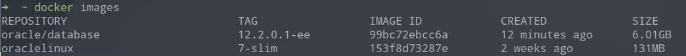

虽然之前上过 oracle 数据库相关的课程，但学得比较浅，上完课后也没怎么使用到 oracle 数据库，一般都使用 mysql、mariadb 等。
最近因为工作需要，不得不重新认真学学 Oracle 数据库了「重复学习真的很浪费时间😓」，而首先需要考虑的就是如何安装一个 oracle 数据库了，之前已有在 windows 系统下直接安装 oracle 数据库的经验。
理论上，再在 win10 上安装一个 oracle 数据库很简单，但我平时主要使用笔记本电脑上的 manjaro 系统，其他的系统只是备用而已。
Intro
自从用了 Docker 之后，平时自己在学习或开发，遇到需要在本机上搭建相关环境时，就会很自然地想到能不能使用 Docker 容器来处理呢！
主要是想让搭建的开发环境与系统环境隔离，我们只在需要使用时才启动相关的容器。当我们不需要使用到该已搭建的环境时，也方便清理！
既然已经决定要使用 Docker 来安装并运行 oracle 数据库，那么我们应该首先看看官方有没有提供相应的镜像，如果有的话，我们便可以直接 pull 下来，然后运行即可。没有，我们也可从基础镜像开始配置，如从 oracle-linux 开始，一层一层去配置我们需要的镜像。
1. 资源下载及准备
好在通过 google 直接搜 「run oracle database using docker」，便有了相关的资源。
我选择了 oracle 在 github 上提供的 docker-image 库。他们也提供了相应的 README.md，给出了如何构建及运行 oracle 镜像的说明。
接下来，我将以 Oracle Database 12c Release 1 (12.1.0.2) Enterprise Edition and Standard Edition 2 为例，简单介绍该镜像的构建及运行使用。
1.1 镜像构建
将 docker-image 库下 OracleDatabase 目录下的所有文件下载下来后，在构建相应版本数据库之前，我们还需要从 Oracle Technology Network 上下载需要构建数据库版本相应的 linux x86 二进制安装包，放到 OracleDatabase/SingleInstance/dockerfiles/<version> 目录中。
接着，只需要执行 buildDockerImage.sh 即可。
1 | [oracle@localhost dockerfiles]$ ./buildDockerImage.sh -h |
因为我们要构建 12.1.0.2 企业版数据库，因此执行 ./buildDockerImage.sh -v 12.1.0.2 -e。
需要注意的，完成该构建镜像过程后，只是生成安装了 Oracle 二进制文件的镜像。在容器第一次启动时，才会创建一个新的数据库实例，当数据库准备好可以使用时，会打印以下几行提示：
undefined
以上是我们使用官方提供的 Dockerfile 来构建的镜像的例子，当然我们也可以使用我们编写的 Dockerfile 来扩展镜像，如创建用户和表空间等。
官方提供的 Dockerfile 使用 oracle-linux 作为镜像基础层。
数据库的字符集编码会在镜像构建过程中进行配置。11g Express Edition 仅支持 UTF-8，标准版 2 和企业版可以在我们第一次运行容器时进行配置，可为不同表空间配置不同的字符集。
我们知道，docker 在构建镜像时，会将所有需要使用到的文件打包传送到构建上下文 (build context) 中，交由 dockerd 服务器来执行构建。
因此，我们应该尽量让构建上下文只包含我们需要的文件，必要时请使用 .dokerignore 文件，来忽略构建镜像时不需要用到的文件。
镜像的构建过程可能需要花费点时间。以我为例，我选择的数据库版本下载下来的安装包大概 4G 左右，然后构建镜像需要 22 步（22 层），花了将近一个小时吧。
镜像的构建过程大概如下（仅列出关键步）：
1 | ... |
构建完成后，我们使用 docker images 来查看相关的镜像。

2. 运行及使用
由于我们构建的 oracle 数据库是企业版 2，因此容器运行主要参考如下：
1 | docker run --name <container name> \ |
例如:
1 | docker run --name dev-oracle-database \ |
在容器启动后及数据库创建完成后，我们可以通过以下方式连接数据库：
如果本机系统上没有 oracle 数据库的客户端，我们可以直接 docker exec -it <container_id> or <container_name> bash 进入容器，之后再使用容器中提供的 sqlplus 去连接数据库。
oracle-linux 系统中肯定是有相应的工具的。
当然啦，当本机上有 Oracle 数据库客户端后，就可以用我们熟悉的方式去连接数据库了。
1 | sqlplus sys/<your password>@//localhost:1521/<your SID> as sysdba |
该 oracle 数据库容器还配置了 OEM (Oracle Enterprise Manager) Express ,我们可以通过浏览器打开以下 URL 来访问:
1 | https://localhost:5500/em/ |
Oracle 数据库容器可以通过使用 O_DIRECT 标志来绕过一些文件的文件系统缓存。但不建议在不支持 O_DIRECT 标志的文件系统上运行容器。
修改 admin 账号的密码
如果第一次启动容器时没有指定密码的话，则会生成随机密码。我们可以在输出日志中的以下行，找到这些账号的密码：
1 | ORACLE PASSWORD FOR SYS, SYSTEM AND PDBADMIN: |
要修改这些账号的密码，我们可以通过 docker exec 去执行容器中的 setPassword.sh 脚本：
1 | docker exec <container name> ./setPassword.sh <your password> |
其他版本的数据库的容器的运行与上面提到的企业版和标准版 2 有点不一样，具体可以参考
Oracle 在 docker-image 库中给出相关 README.md 文件。
Summary
本文主要简单介绍了，如何使用 oracle 提供的 docker-image 库构建自己想要的 oracle 数据库镜像，然后运行并使用已构建的镜像。
实际上，除了使用 oracle 提供的 docker-image 库自己构建相应的镜像外（能使用提供的 Dockerfile 进行自定义），我们也能直接通过类似 docker pull store/oracle/database-enterprise:12.2.0.1-slim 命令直接从官方库上下相应的镜像。
References